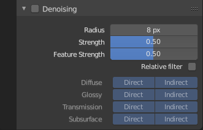

降噪¶
参考
| 面板: |
|---|
降噪使用渲染过程中收集的信息(称为特征传递)过滤生成的图像，以去除噪点，同时尽可能保留视觉细节。
Note
降噪面板仅适用于Cycles渲染引擎。
要使用该选项，请在属性编辑器的视图层选项卡中启用它。渲染时，当周围所有的拼贴渲染完成后，它将逐个拼贴降噪。默认设置适用于各种场景，但是用户可以调整单独的设置来控制无噪声图像、图像细节和计算时间之间的权衡。
See also
请参阅 噪波优化 页面上的其他降噪方法。
选项¶

降噪面板。
- 半径
- 用于消除像素噪点的图像区域的大小。更高的值更平滑，但可能会丢失细节，速度也更慢。
- 强度/力度
- 控制相邻像素周围区域与中心像素相比在不用于降噪前的差异。较低的值可以保存更多的细节，但不太平滑。
- 特性强度
- 控制在实际降噪之前去除噪声和冗余图像特征。这在某些情况下是必要的，如DoF或运动模糊，以避免斑点的出现，但可能会导致精细纹理/几何细节丢失。较低的值可以保存更多的细节，但不太平滑。
- 相对过滤
- 当删除不包含信息的特性时，根据特性中的信息总量决定保留哪些特性。这可以帮助减少工件，但可能会导致边缘周围的细节丢失。
- 通道
- 你可以有选择地选择哪个 通道 降噪。
注释和问题¶
该降噪器将在未来发生变化，一些功能尚未实现。如果降噪效果不好，更多的采样或钳制往往会解决这个问题。
- 通常不建议将半径设置得太高。它会大大增加去噪时间，虽然结果可能更平滑，但由于渲染器没有任何其他信息，因此结果不准确。半径超过~15，额外的渲染时间最好用于增加采样的次数。
- 降噪还不能用于烘烤。
- 对于动画降噪是可用的，但它仍然需要较高的采样次数才能获得良好的效果。在低采样次数时，即使在静止图像中不能立即显现，动画帧中也可以看到低频（模糊）噪声。
- 使用GPU渲染时，降噪过程可能会使用大量的vRAM。如果GPU内存不足，但是在没有降噪的情况下渲染得很好，请尝试减小拼贴大小。